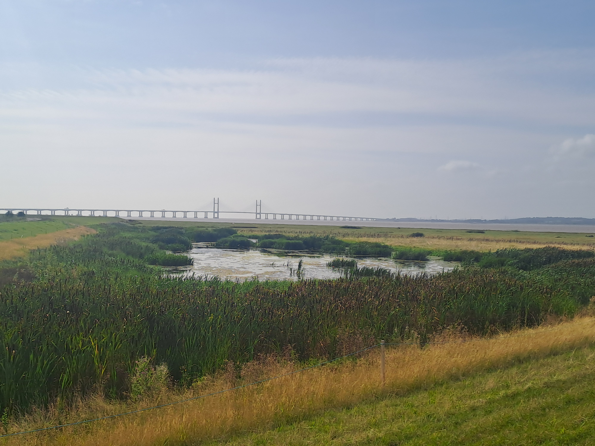

About Alan
A Bristol-rooted, widely travelled, practically curious person.
I grew up in Bristol and spent the first part of my life in the city before living and working in the North East of England, Scotland and Donegal.
That route has given me a broad view of people, places, systems and working cultures. I am now Bristol-based again, with a professional background that crosses technical operations, information security, service support, customer operations, healthcare administration and documentation-heavy environments.
My route has not been perfectly linear, but it has given me range, perspective and a practical understanding of how work actually happens: through people, records, decisions, constraints and communication.

Place and Curiosity
The person behind the professional pages.
I lived in Donegal for around a decade, and that remains an important part of my sense of place, language and identity. It is one reason there are small Irish touches across the site.
Away from formal roles, I am interested in reading, language learning, civic life, public services, history, politics in a non-party-political sense, and how ordinary people make sense of complicated systems.
I am currently learning Spanish and have a long-standing interest in Irish, with some French. I like projects that make information more usable: websites, notes, records, small systems and practical ways of making work easier to understand.
Building bridges between perspectives and experiences enables deeper understanding and collaboration.

What this means
Human qualities that carry into the work.
Roots and range — Bristol roots, time in Britain and Ireland, and experience of different working cultures.
Curiosity with structure — interest in language, reading, civic life and practical systems, kept grounded by useful outputs.
Clear communication — a habit of translating between people, roles, documents and decisions so the next step is easier to see.
Affable professionalism — a steady, approachable style with a strong preference for fairness, clarity, responsibility and follow-through.
Continue Reading
Next sections.
Profile · Experience · Method · Workbench · Timeline · CV · Contact